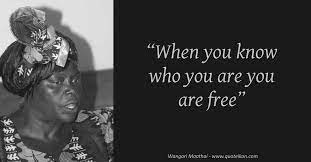
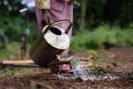
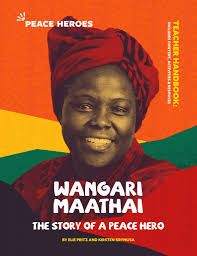
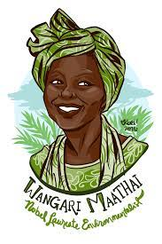
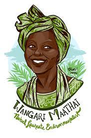
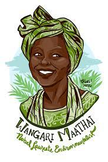

Gallery
   

Wangari Maathai was a renowned environmentalist and political activist from Kenya. She was born on April 1, 1940, in Nyeri, Kenya. Maathai grew up in a rural community surrounded by lush forests, which fostered her deep love and appreciation for nature. She studied biology in the United States and became the first woman in East Africa to earn a Ph.D. in 1971. Wangari Maathai's groundbreaking academic achievements paved the way for her influential career in environmental conservation and sustainable development. In 1977, she founded the Green Belt Movement, an organization focused on empowering communities, particularly women, through tree planting and environmental conservation. Through this movement, Maathai encouraged local communities to plant trees to combat deforestation and soil erosion while promoting sustainable livelihoods. Wangari Maathai faced numerous challenges and opposition in her activism, including harassment, imprisonment, and even physical attacks. However, she remained resilient in her pursuit of environmental justice and democracy, becoming an inspiration for people around the world. Her extraordinary efforts were recognized globally when she became the first African woman to win the Nobel Peace Prize in 2004. This prestigious honor highlighted her exceptional contributions to sustainable development, democracy, and peace. Wangari Maathai's legacy extends far beyond her lifetime. Her tireless advocacy and dedication to environmental conservation continue to inspire individuals and communities worldwide to take action and protect our planet for future generations.
